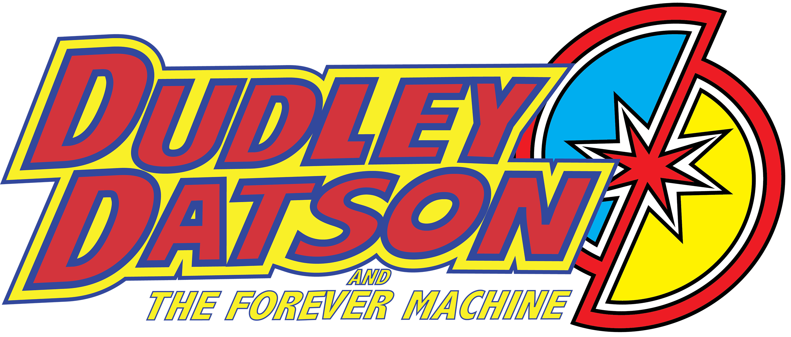

Dudley Datson and the Forever Machine written by Scott Snyder with art by Jamal Igle and Juan Castro and
colors by Chris Sotomayor—Throughout history, the world’s greatest engineers have tried, and failed, to
create the perpetual motion machine – a machine that could open doorways
through space-time and other terrifying realities. But what if a perpetual motion
machine had been created? A machine this powerful would need to be the
world’s most guarded secret. And for as long as it has existed, “the Forever
Machine” has been pursued by the Needle’s Eye, a group of the rich, powerful
and nefarious who seek to use it to fulfill their own desires…
Enter Dudley Datson, a science-loving geek who goes to a school for gifted kids
in Brooklyn, NY. His closest friend is his science teacher, Dr. Adara Shae. She’s
brilliant and well known around the world, doing a residency at Dudley’s school,
and recognizes his promise. She’s also the current protector of the Forever
Machine…
After the Needle’s Eye catches up to her, a dying Dr. Shae passses the Forever
Machine to Dudley. And where the machine goes, its guardian mechanical dog
Daedalus follows. Full of gadgets and tricks, able to speak, Daedalus becomes
Dudley’s protector as they struggle to keep the Forever Machine away from the
Needle’s Eye.
Jamal Igle
Jamal Igle is a recipient of the 2011 Inkpot Award for outstanding achievement in Comic Art. He is the writer/artist/creator of Molly Danger for Action Lab Entertainment, co-creator of Venture with Dynamo 5 creator/writer Jay Faerber and the penciller/co-creator of The Wrong Earth with writer and editor in chief Tom Peyer for Ahoy Comics. Jamal is a comic industry veteran whose detailed pencils have graced books as varied as Narrative of the Life of Frederick Douglass, the all-ages action miniseries Race Against Time as well as mainstream hits such as G.I. Joe, Iron Man, Spider-Man and Green Lantern. Jamal has served as the series artist for Firestorm the Nuclear Man, Nightwing, Tangent: Superman's Reign, Superman, Supergirl and Zatanna for DC Comics, Noble Causes for Image Comics and a four-issue run on New Warriors for Marvel Comics. He's done just about everything from acting on the small screen to voiceovers for commercials, packaging books for Scholastic, storyboards artist on Roughnecks: Starship Trooper Chronicles and Max Steel: MX1 for Sony Animation. Jamal is also a popular guest lecturer on the subjects of comics and animation. He is currently working on the sequels of both the hit series BLACK called WHITE from Black Mask Studios and The Wrong Earth: Night and Day.